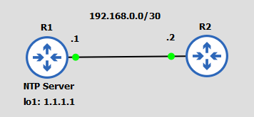

A
B
C
D
V podstatě již každé síťové zařízení vytváří nějakým svým způsobem logy. Aby se v případě nějakého problému mohl log řádně prošetřit, je důležité vědět, kdy daná událost nastala. K tomu slouží tzv. "timestamp".
Jak ale zařízení ví, kolik je hodin?
Cisco zařízení mají 2 typy hodin. Mají tzv. hardware hodiny (calendar) a software hodiny (clock). Softwarové hodiny jsou hodiny, které se po restartu vrátí na svoji původní hodnotu a hardware hodiny (calendar) jsou hodiny, které běží i po restartu. Tyto hodiny fungují nezávisle na sobě.
Hlavním zdrojem času jsou pro zařízení klasicky software hodiny, které jsou napojené na hardware hodiny. Bohužel jak už to bývá, časem se stává, že se hodiny začnou opožďovat až postupně ztratí svoji relevanci. Tato nepřesnost mezi logy na různých síťových zařízení by nám mohla ztížit troubleshooting síťových problémů, proto je vhodné v síti používat NTP (Network Time Protocol) či PTP (Precision Time Protocol) protokol.
Pro to aby bylo nastavení NTP, co nejhladšší je dobré nejdříve nastavit software a hardware hodiny.
pozn. Zařízení v Packet Traceru nemají hardware clock, proto je v labech nenastavíte.
Před nastavením samotného času je vždy dobré nastavit nejdříve časové pásmo a letní čas. To je dáno tím, že když nejdříve nastavíme čas a až poté časové pásmo a letní čas, tak se na nynější čas aplikují daná pravidla - Běžně totiž nastavujeme čas v UTC. Kdybychom tedy nastavili nejdřív to, že je 18.10.2023 18:00, tak po nastavení časové zóny na CET a letního času by z 18:00 bylo najednou 20:00.
Pro nastavení časového pásma a letního času použijeme následujicí příkazy:
Router(config)#clock timezone CET 1 0 Router(config)#clock summer-time CEST reccuring last sunday march 2:00 last sunday october 3:00
pozn. časové pásmo či letního čas se nastavuje pouze na software hodinách
Pro manuální nastavení softwarových hodin na datum 15.10.2023 13:39:45 použijeme příkaz:
Router#clock set 13:39:45 15 october 2023
Pro manuální nastavení hardwarových hodin na totéž datum použijeme příkaz:
Router#calendar set 13:39.45 15 october 2023
Budeme-li chtít aktualizovat čas softwarových hodin pomocí hardware hodin, použijeme příkaz:
Router#clock read-calendar
Když to obrátíme a budeme chtít aktualizovat čas hardwarových hodin pomocí sofwarových hodin, aplikujeme následujicí příkaz:
Router#clock update-calendar
V úvodu jsme si vysvětlili, že pouze manuální konfigurace není v běžné praxi přijatelná, protože časem se hodiny znepřesní a také není snadno rozšířitelná. Aby k tomuto nedocházelo, vyvinul se NTP protokol, který synchronizuje zařízení s NTP serverem.
Jak NTP funguje?
NTP funguje tak, že máme klienta a server. Klient požádá server o synchronizaci času. Server žádosti vyhoví a pošle klientovi aktuální čas. Intenzita žádostí o synchronizaci času se pohybuje od 64 sekund do 1024 sekund s tím, že se dynamicky mění dle potřeby.
Pozor NTP pracuje pouze v UTC, proto je dobré předem nastavit časové pásmo a letní čas.
NTP používá UDP port 123.
NTP dovede udržet čas v rozmezí desítek milisekund.
Zařízení může být zároveň jak NTP klientem tak NTP serverem, přičemž každý zařízení, které získává čas z jiného je zároveň i serverem (bez žádné další konfigurace) a může být zdrojem času pro jiné zařízení.
Úplně na začátku jsou "Referenční" hodiny. Ty jsou zdrojem času a všechna ostatní zařízení synchronizují svůj čas právě s těmito hodinami.
Z referenčních hodin získávají čas tzv. primární servery. Jako primární server označujeme zařízení, který má Stratum 1.
Stratum je vzdálenost zařízení od referenčních hodin. NTP servery, které mají stratum větší jak 15 jsou označeny jako nedůvěryhodné a ostatní zařízení s nimi nesynchronizují svůj čas.
Pojem sekundární server poté zahrnuje všechny ostatní NTP servery.
Nakonec nám na obrázku ještě zbývá NTP Peer, NTP peer je zařízení, který má stejný stratum a se kterým si mezi sebou synchronizujeme čas.
RFC 1129 nám definuje následujicí NTP módy:
Tato část zabývá doporučeními, na které je při konfiguraci NTP třeba myslet.
Na úvod mějme následujicí topologii:
R2 má nastaveno to, že se NTP server má hledat na zařízení s IP adresou 192.168.0.1.
Co by se ale stalo, pokud by fyzická linka s touto IP adresou selhala?
Pokud by linka mezi R1 a R2 selhala, tak by NTP klient prišel o svůj zdroj času, protože 192.168.0.1 by se najednou stala nedostupnou.
Tomuto lze ale zabránit, protože R1 je sám o sobě stále dosažitelný přes R3. K tomuto účelu stačí na R1 nakonfigurovat loopback interface a R2 říct, že má NTP server hledat právě na loopback adrese R1. Tím pádem by R2 měla mít zdroj času, dokud ji bude R1 dostupná.
K procvičení NTP konfigurace si zvolíme následujicí topologii:
Začňeme tím, že nakonfigurujeme, časové pásmo a letní čas na R1:
R1(config)#clock timezone CET 1 0 R1(config)#clock summer-time CEST reccuring last sunday march 2:00 last sunday october 3:00
Teď když máme správně nakonfigurovanoé letní čas a časové pásmo, nastala chvíle na to nakonfigurovat na R1 aktuální čas:
R1#clock set 15:20:00 21 october 2023
Pro to abychom nakonfigurovali R1 jako NTP server, použijeme následujicí příkaz:
R1(config)#ntp master 2
pozn. 2 zde určuje stratum
Nyní se přesuneme na R2, kde opět nastavíme časové pásmo, letní čas a přibližný aktuální čas:
R2(config)#clock timezone CET 1 0 R2(config)#clock summer-time CEST reccuring last sunday march 2:00 last sunday october 3:00 R2#clock set 15:20:00 21 october 2023
pozn. přibližný aktuální čas na R2 nastavujeme proto, že se nám pak spolu s NTP serverem lépe synchronizují.
Nakonec synchronizujeme R2 se serverem, k tomu použijeme loopback adresu NTP serveru:
R2(config)#ntp server 1.1.1.1
Někdy se stane, že během konfigurace uděláme chybu. K nalezení chyby nám v rámci NTP protokolu slouží následujicí příkazy:
R1#show ntp status
Z příkazu show ntp status jsou pro nás klíčové následujicí informace: stratum, ip adresa ntp serveru a to zda jsou hodiny synchronizované.
R1#show ntp associations
Příkaz show ntp associations nám zas dává důležité informace (stratum ntp serveru, reach, delay, atd) o nakonfigurovaných NTP serverech.
K nastavení NTP autentizace použijeme topologii z předešlé konfigurace
Prvně povolíme na R1 (NTP serveru) ntp autentizaci pomocí příkazu:
R1(config)#ntp authenticate
Následně na R1 (NTP serveru) vytvoříme klíč pomocí kterého se budeme ověřovat:
R1(config)#ntp authentication-key 1 md5 netzwe
pozn. 1 je číslo klíče, které jej identifikuje
Nyní na R1 (NTP serveru) specifikujeme jakým klíčům bude zařízení důvěřovat:
R1(config)#ntp trusted-key 1
Na klientu poté nastavíme totéž co na R1 + při konfiguraci NTP serveru specifikujeme jaký klíč má s tímto serverem použít:
R2(config)#ntp server 1.1.1.1 key 1
PTP nebo-li Precision Time Protocol je protokol, který je použit tam, kde NTP již nestačí.
Je to protokol, který se snaží minimalizovat delay tak, aby zařízení dostalo co nejpřesnější čas.
| Příkazy | Popis | Mód |
|---|---|---|
| vlan {vlan-id} | Vytvoří VLAN a přepne do VLAN interfacu | Global Config |
| name {vlan-name} | Pojmenuje VLAN | VLAN interface |
| switchport mode {access | trunk | dynamic desirable | dynamic auto} | Přepne interface do modu | Interface |
| switchport nonegotiate | Vypne DTP na interfacu | Interface |
| switchport access vlan {vlan-id} | Přiřadí VLANu k danému interfacu | Interface |
| switchport trunk encapsulation {protocol} | Nastaví trunking protokol na switchi | Global Config |
| switchport trunk native vlan {vlan-id} | Nastaví Native VLAN | Interface |
| switchport trunk allowed vlan {add | all | except | remove} {vlan-id} | Nastaví povolené VLANy na trunku | Interface |
| encapsulation dot1q {VLAN_ID} | Nastaví sub interface pro danou VLAN | router - sub interface |
| vtp mode {transparent | off} | Vypne VTP | Global Config |
| show interfaces switchport | Zobrazí informace o interfaci | EXEC |
| show interfaces {interface-id} trunk | Zobrazí informace o truncích | EXEC |
| show vlan brief | Zobrazí informace o VLAN | EXEC |
| show vtp status | Zobrazí informace o VTP | EXEC |
A
B
C
D